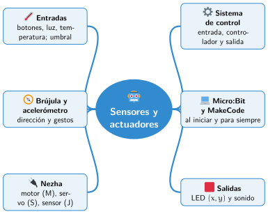

Bloque III · Control con Micro:Bit
UD08 Sensores y actuadores
Sesiones
- Sesión 8.1 Entrada, controlador y salida
- Sesión 8.2 La placa Micro:Bit y MakeCode
- Sesión 8.3 Salidas: la pantalla de LED y el sonido
- Sesión 8.4 Entradas: botones, luz y temperatura
- Sesión 8.5 La brújula y el acelerómetro
- Sesión 8.6 Sensores y actuadores externos con el Nezha
Al terminar la unidad
Mapa mental de la unidad

✏️ Repasa la unidad con el mapa: tapa una rama y explica en voz alta lo que pone.